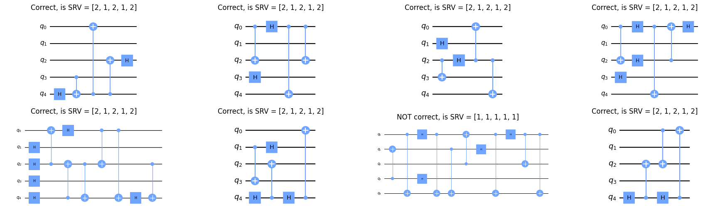

from genQC.imports import *
from genQC.pipeline.diffusion_pipeline import DiffusionPipeline
import genQC.inference.infer_srv as infer_srv
import genQC.util as utilGenerate a circuit
A minimal example to generate a circuit. We load a pre-trained (SRV, 3 to 8 qubit) model and condition on a given Schmidt-Rank-Vector (SRV).
device = util.infer_torch_device() # use cuda if we can
util.MemoryCleaner.purge_mem() # clean existing memory alloc[INFO]: Cuda device has a capability of 8.6 (>= 8), allowing tf32 matmul.devicedevice(type='cuda')Setup and load
Load the pre-trained model directly from Hugging Face: Floki00/qc_srv_3to8qubit.
pipeline = DiffusionPipeline.from_pretrained("Floki00/qc_srv_3to8qubit", device)[INFO]: `genQC.models.unet_qc.QC_Cond_UNet` instantiated from given config on cuda.
[INFO]: `genQC.models.frozen_open_clip.CachedFrozenOpenCLIPEmbedder` instantiated from given config on cuda.
[INFO]: `genQC.models.frozen_open_clip.CachedFrozenOpenCLIPEmbedder`. No save_path` provided. No state dict loaded.Check on what gates the model was trained
pipeline.gate_pool['h', 'cx']Set 20 sample steps and use rescaled guidance-formula.
pipeline.guidance_sample_mode = "rescaled"
pipeline.scheduler.set_timesteps(20)Inference / sampling
Set our desired condition SRV
srv = [2, 1, 2, 1, 2] # set your target SRV; can be 3 to 8 qubit
num_of_qubits = len(srv)
prompt = f"Generate SRV: {srv}" # model was trained with this phrase
prompt'Generate SRV: [2, 1, 2, 1, 2]'Define sample parameters
g = 10 # guidance scale
max_gates = 16 # how many time steps the tensor encoding has
samples = 64 # how many circuits to generateSample tokenized circuits
out_tensor = infer_srv.generate_srv_tensors(pipeline, prompt, samples, num_of_qubits, num_of_qubits, max_gates, g, no_bar=False)[INFO]: (generate_srv_tensors) Generated 64 tensorsCheck how many distinct tensors we got:
out_tensor.unique(dim=0).shape[0]64Let’s look what is generated. Note, 3 is the padding token (or empty action).
out_tensor[:2]tensor([[[ 0, 0, 2, 0, 0, 3, 3, 3, 3, 3, 3, 3, 3, 3, 3, 3],
[ 0, 0, 0, 0, 0, 3, 3, 3, 3, 3, 3, 3, 3, 3, 3, 3],
[ 0, 0, 0, 2, 1, 3, 3, 3, 3, 3, 3, 3, 3, 3, 3, 3],
[ 0, -2, 0, 0, 0, 3, 3, 3, 3, 3, 3, 3, 3, 3, 3, 3],
[ 1, 2, -2, -2, 0, 3, 3, 3, 3, 3, 3, 3, 3, 3, 3, 3]],
[[-2, 1, 0, -2, -2, 3, 3, 3, 3, 3, 3, 3, 3, 3, 3, 3],
[ 0, 0, 0, 0, 0, 3, 3, 3, 3, 3, 3, 3, 3, 3, 3, 3],
[ 2, 0, 0, 0, 2, 3, 3, 3, 3, 3, 3, 3, 3, 3, 3, 3],
[ 0, 0, 1, 0, 0, 3, 3, 3, 3, 3, 3, 3, 3, 3, 3, 3],
[ 0, 0, 0, 2, 0, 3, 3, 3, 3, 3, 3, 3, 3, 3, 3, 3]]])Convert to qiskit circuit
To get a qiskit circuit we need to do:
- apply cosine similarity to go from embeddings to token matrices (the function
infer_srv.generate_srv_tensorsdid this already) - parse token matrix to qiskit and filter out error circuits
- calculate SRV and plot circuits
qc_list, error_cnt, srv_list = infer_srv.convert_tensors_to_srvs(out_tensor, pipeline.gate_pool)Generated error circuits (token matrices that don’t correspond to circuits):
error_cnt0What SRVs did we get:
srv_list[:4][[2, 1, 2, 1, 2], [2, 1, 2, 1, 2], [2, 1, 2, 1, 2], [2, 1, 2, 1, 2]]That is an accuracy of:
sum(srv==x for x in srv_list)/len(srv_list)0.9375Finally plot some of the circuits:
fig, axs = plt.subplots(2, 4, figsize=(18,5), constrained_layout=True)
for qc,is_srv,ax in zip(qc_list, srv_list, axs.flatten()):
is_srv = [int(x) for x in is_srv]
qc.draw("mpl", plot_barriers=False, ax=ax, style = "clifford")
ax.set_title(f"{'Correct' if is_srv==srv else 'NOT correct'}, is SRV = {is_srv}")
plt.show()
import genQC
print("genQC Version", genQC.__version__)genQC Version 0.1.0